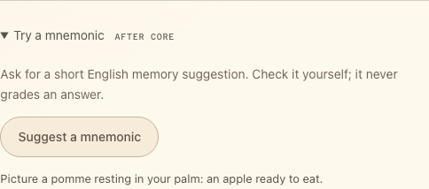

Add a mnemonic¶
Optional, after lessons 1–5. Ask MAI-Thinking for an English memory aid:
button → Flask /mnemonic → chat completions → text on the card.
API details.
Build¶
Append to starter/app.py:
@app.post("/mnemonic")
def mnemonic():
data = json_body()
word = text_field(data, "word")
base, headers = gateway_settings()
response = httpx.post(
f"{base}/mai/v1/chat/completions", headers=headers,
json={
"model": "mai-thinking",
"messages": [{"role": "user", "content": (
f"Write one short, imaginative English mnemonic for the English word "
f"{word!r}. Use at most two sentences. Do not claim it is a verified fact."
)}],
"max_completion_tokens": 2048,
}, timeout=TIMEOUT,
)
payload = upstream_json(response)
choices = payload.get("choices")
if not isinstance(choices, list) or not choices or not isinstance(choices[0], dict):
abort(502, "The reasoning model returned no suggestion.")
message = choices[0].get("message")
text = message.get("content") if isinstance(message, dict) else None
if not isinstance(text, str) or not text.strip():
abort(502, "No text suggestion was returned. The model may have exhausted its output budget.")
return jsonify(text=text.strip())
The prompt sets tone and length; max_completion_tokens caps output including
reasoning. Read choices[0].message.content as text, not JSON.
In starter/templates/index.html, replace
<!-- Add mnemonic controls here. --> with:
<details class="extension">
<summary>Try a mnemonic <span class="eyebrow">AFTER CORE</span></summary>
<p class="muted">Ask for a short English memory suggestion. Check it yourself; it never grades an answer.</p>
<button id="generate-mnemonic" class="button secondary" type="button">Suggest a mnemonic</button>
<p id="mnemonic-result" class="status" role="status"></p>
</details>
In starter/static/app.js, insert before // Start the page.:
$("#generate-mnemonic").addEventListener("click", () => {
runAction("MAI Thinking is considering your word...", async () => {
const response = await callApp("/mnemonic", jsonOptions({word: selectedWord().english}));
const result = await appJSON(response);
if (typeof result.text !== "string" || !result.text.trim()) {
throw new Error("No text suggestion was returned.");
}
$("#mnemonic-result").textContent = result.text;
});
});
Finally, inside selectWord in that same JavaScript file, insert
$("#mnemonic-result").textContent = ""; immediately after
$("#answer-result").hidden = true;. This clears the suggestion when selecting
another word.
Run: restart Flask, reload, select a word, expand Try a mnemonic, and press Suggest a mnemonic. The suggestion should appear on its card.

Captured with an example text response.
Try one¶
- In the Python prompt, replace
one short, imaginative English mnemonicwithone simple English example sentence. - Replace
imaginativewithpractical and understated.
Restart Flask, request the same word, compare results, and keep your preferred prompt. Answer matching stays deterministic.